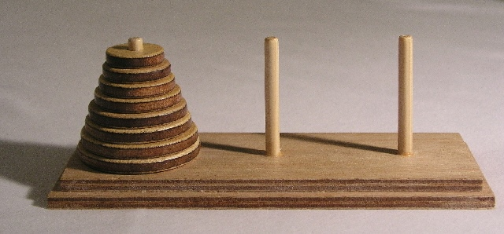

さて、この写真は何でしょう？

画像出典：Wikipedia
もしかしたら見たことのある人もいるかもしれませんね。でも知らなかったら何をするものか全く想像しにくいでしょう。
実はこれ、パズルゲーム『ハノイの塔』と呼ばれるものです。１９世紀に、ある大学教授のアイディアから作られたものらしいのですが、遊び方は至ってシンプルです。
３本の柱のうち１本に、穴の開いた円柱が、幅の大きなものから順に下からピラミッド状に積み上げられています。
以下のルールに従って最終的に他の柱にピラミッドをそっくりそのまま移し変えます。
ルール
①１回につき、１個の円柱を他の柱に移動できます。
②ただし、小さな幅の円柱の上に大きな幅の円柱を置くことはできません。
うまくピラミッドを移し変えられるかな？やってみよう！というゲームです。
さて、ここで一つの疑問が浮かんできませんか？そう、まず円柱の数はいくつなのか、ということ。
お答えしましょう。いくつでも構いません。もちろん、個数が増えるほど難問になりますよね。写真の例では円柱が５個ですが、これぐらいの個数になるともう難問です。
さらにもう一つの疑問があります。それは「何回手順を踏んでもよいのか」ということ。よくわからないけど適当にやってみたら出来た…という場合もあるでしょう。しかし、ただやみくもに円柱を動かすだけでは時間とストレスがつのるばかりです。
おそらく最短の手順があるのではないか？
そう、あります！
円柱の個数に対応した最短手順というものを突き止めるのが、この『ハノイの塔』の醍醐味なのです。
そして究極的には、その公式を作ることが出来るのです。
ハノイの塔攻略法
例えば、
円柱が１個の場合は、最短手順の回数は１回
円柱が２個の場合は、最低手順の回数は３回
円柱が３個の場合は、最低手順の回数は７回
…え、もうついてこられない？
ではでは、ちょっと動画を見てみましょうか。
どうですか？これで何とかブロックを移すため手順イメージができたのではないでしょうか。
ちなみに円柱が４個の場合の手順回数は１５回でした。
ただし、これではまだそれぞれの場合においての手順を考えているだけで、「円柱が何個の場合でも共通する考え方」にまで至ってはいません。
そこで、次の動画です！
はい、いかがでしたでしょうか。動画で言った通り、１つ前のブロック数のときの手順の回数を利用して考えるんですね。
そうすると芋づる式に、
円柱が５個の場合は、最低手順の回数＝（円柱が４個のときの答え）×２＋１
＝１５×２＋１
＝３１回
円柱が６個の場合は、最低手順の回数＝（円柱が５個のときの答え）×２＋１
＝３１×２＋１
＝６３回
というふうに求めることができます。
最初に考えていたよりも随分と視点が進歩しました。ただし、これとて順々に円柱を増やして答えを作っていかなければならないので面倒です。
実はもっと一般化して、円柱の数がｎ個のときの最短手順＝2n-1
ということになるのですが、これを導くには高校数学でいう「数列」の知識が必要になるので、それはまた次の機会に…！